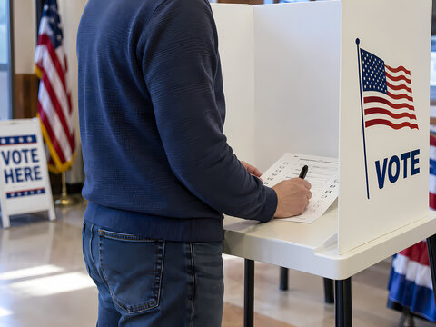

VOTE
Your voice matters. Make a difference by participating in elections and making your vote count.

Get Involved
Getting involved in elections is one way to make a difference in your community. You can start by learning about the candidates, understanding the issues that matter to you, and making a plan to vote. You can also encourage friends and family members to participate and help spread awareness about the importance of voting.
Make Your Voice Heard
Every election gives you an opportunity to share your opinions and help shape the future. Voting allows you to have a say in decisions about schools, roads, public services, community programs, and national leadership. Even local elections can have a major impact on your everyday life. Your participation helps make sure your voice is represented.
Get Out and Vote!
Knowing where to find accurate voting information can make participating in elections much easier. These websites provide helpful information about registering to vote, checking election deadlines, finding polling locations, and understanding the voting process.
Learn how to register, update your registration, and find registration information for your state.
Vote.gov - Register to Vote
Find information about elections, voting by mail, voter registration, and election rules.
USA.gov - Voting Information
Learn about voting accessibility, election preparation, and other helpful voting information.
Election Assistance Commission
Find your state's election website and look up information about your polling place and voting options.
Can I Vote - Find Voting Information